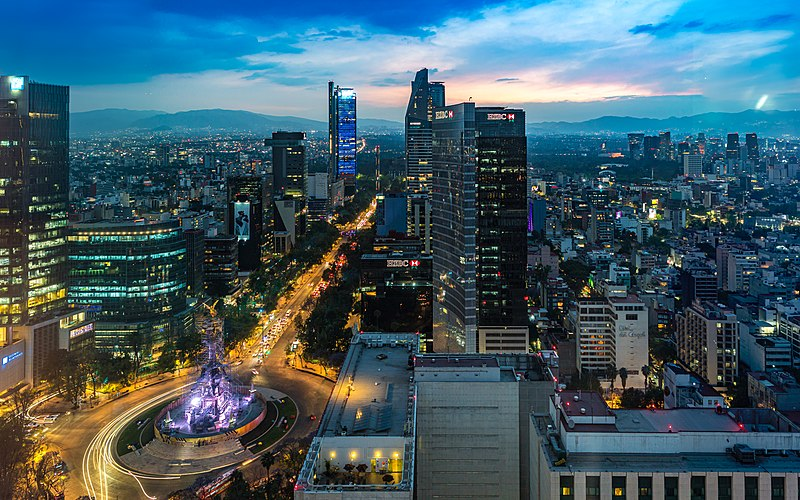

City: Mexico City (Nahuatl: Āltepētl Mēxihco)
Country: Mexico
- Population: 9,209,944 (as of 2020)
- Landmarks:
- The Angel of Independence
- Basilica of our Lady Guadalupe
- Zocalo
- Climate: Subtropical Highland Climate
- Brief History of Mexico City:
- Mexico City is one of the oldest capitals in America founded by indigenous Americans. It was founded on 1325 by Mexica people.
- In the 20th century to the present-day, Mexico City has grown immensely.
- Mexico City today is a major economic hub.
- Facts of Mexico City:
- Mexico City is the capital and largest city of Mexico.
- Mexico is known as the "The City of Palaces" as English politican Charles Latrobe was impressed by the city during the 19th century.
- Mexico City is major economic hub and has a high human development index.
- Mexico City is located on the Valley of Mexico.
- 